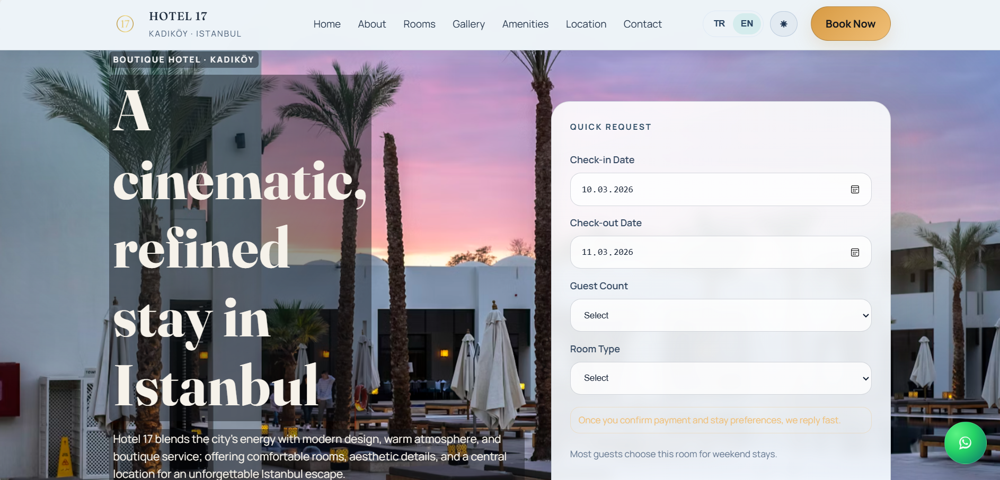
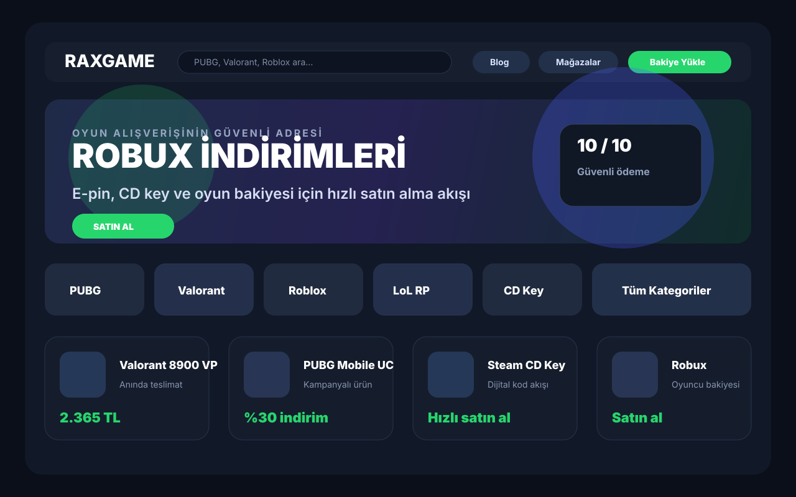
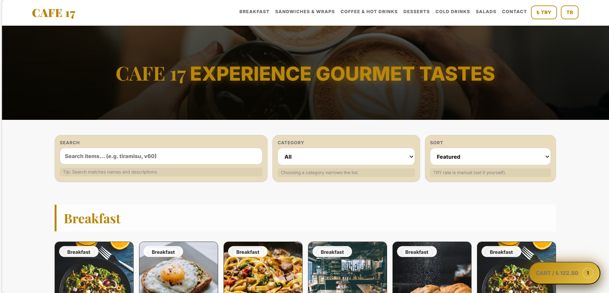
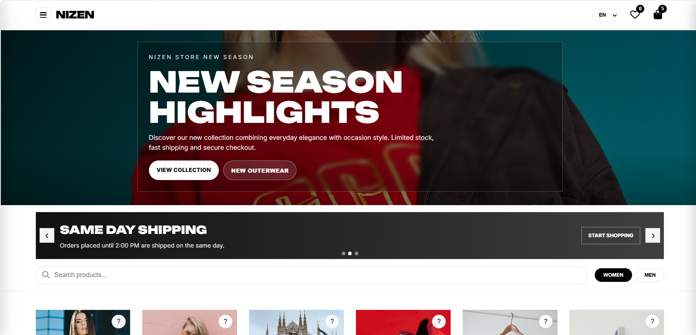
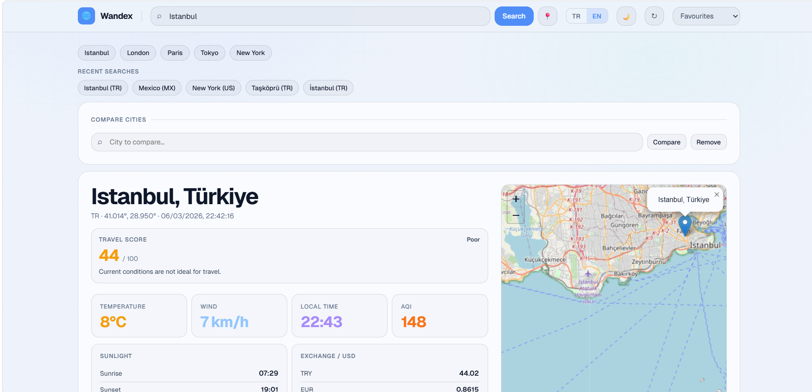
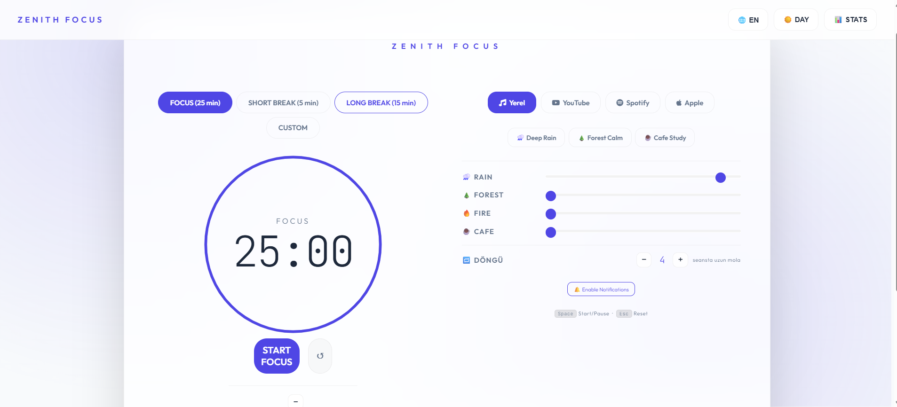
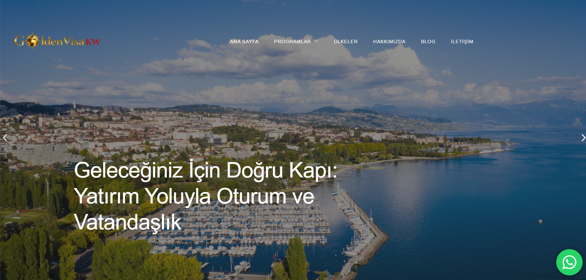

UI/UX Design
UI/UX Design
Arayüz hiyerarşisi, kullanıcı akışı ve dönüşüm odaklı deneyim tasarımı.
Interface hierarchy, user flows, and conversion-oriented experience design.
Responsive web arayüzleri, admin panelleri ve e-ticaret sistemleri geliştiriyorum. Gerçek dünyada kullanılan, ölçeklenebilir ve yönetilebilir projeler üretmeye odaklanıyorum.
I build responsive web interfaces, admin panels, and e-commerce systems. My focus is on real-world, scalable, and maintainable projects used in production.

Sade tanıtım sitelerinden daha özel dijital çözümlere kadar farklı ihtiyaçlara uygun web projeleri geliştiriyorum.
From clean showcase websites to more tailored digital solutions, I build web projects around real needs.
Arayüz hiyerarşisi, kullanıcı akışı ve dönüşüm odaklı deneyim tasarımı.
Interface hierarchy, user flows, and conversion-oriented experience design.
HTML, CSS ve JavaScript tabanlı hızlı, erişilebilir ve ölçeklenebilir arayüz geliştirme.
Fast, accessible, and scalable interface development with HTML, CSS, and JavaScript.
İş süreçlerini destekleyen ve panellerle bütünleşen uygulama arayüzleri.
Application interfaces aligned with business logic and designed for admin/user workflows.
Rol tabanlı yönetim, onay, raporlama ve içerik düzenleme akışları için panel tasarımı.
Panel design for role-based operations including approvals, reporting, and content management.
Ürün, kategori, kampanya ve sipariş akışlarını birlikte ele alan sistem tasarımı.
System design covering products, categories, campaigns, and order flows.
İçerik güdümlü, yönetilebilir ve tekrar kullanılabilir bileşenlerle yaşayan web çözümleri.
Living websites built from reusable components and dynamic content architecture.
İş fikrinden lansmana kadar ürün mantığıyla tamamlanan uçtan uca dijital ürün geliştirme.
End-to-end digital product development from concept and architecture to launch.
Gerçek dünyada kullanılan, ölçeklenebilir ve yönetilebilir web uygulamaları, admin panelleri ve e-ticaret sistemleri. Her proje, teknik çözüm ve üretim odaklı bir yaklaşımla geliştirildi.
Real-world, scalable, and maintainable web apps, admin panels, and e-commerce systems. Each project is built with a technical, production-focused approach.
Farklı departmanlardan gelen Excel KPI dosyalarını standart veri yapısına dönüştüren, Power Query ile konsolide eden ve yönetim dashboard akışına hazırlayan kurumsal raporlama sistemi.
An enterprise reporting system that standardizes departmental Excel KPI files, consolidates them with Power Query, and prepares the data for a management dashboard workflow.
Problem: KPI verileri farklı departmanlardan tutarsız Excel formatlarıyla geliyordu; raporlama parçalıydı ve yönetim için merkezi bir KPI modeli gerekiyordu.
Problem: KPI data came from multiple departments in inconsistent Excel formats; reporting was fragmented and management needed a centralized KPI model.
Çözüm: Departman dosyalarını ortak şemaya dönüştüren, Power Query ile konsolide eden ve dashboard-ready uzun veri modeline hazırlayan yenilenebilir bir raporlama akışı kurgulandı.
Solution: I shaped a refreshable reporting workflow that maps department files into a shared schema, consolidates them through Power Query, and transforms them into a dashboard-ready long data model.
Modüler gömlek tasarımı için SVG katman motoru, anchor yerleşimi, Pantone renk paneli, kural motoru, kullanıcı oturumu ve PDF export akışlarını birleştiren tasarım sistemi.
A modular shirt design system combining an SVG layer engine, anchor-based layout, Pantone color panel, rule engine, user sessions, and PDF export flows.
Problem: Gömlek tasarımında beden, yaka, kol, manşet, kapama, renk ve kumaş seçimlerinin aynı anda doğru katmanlarla çalışması gerekiyordu.
Problem: Shirt design required body, collar, sleeve, cuff, closure, color, and fabric selections to work together with accurate visual layers.
Çözüm: Ortak viewBox kullanan SVG katman motoru, anchor tabanlı yerleşim ve canlı önizleme ile seçim değiştikçe tasarımı anlık güncelleyen bir editör kurguladım.
Solution: I built an editor with a shared-viewBox SVG layer engine, anchor-based placement, and live preview that updates the design as selections change.
Sistem: Kural motoru, hard/soft kombinasyon kontrolleri, Pantone renk paneli, kullanıcı bazlı dil/mod tercihi, kayıtlı tasarımlar, yorumlar, revizyon geçmişi, PDF export ve smoke test doğrulama akışları kuruldu.
System: The system includes a rule engine, hard/soft compatibility checks, Pantone color panel, user-specific language/mode preferences, saved designs, comments, revision history, PDF export, and smoke-test validation flows.

Butik otel deneyimini daha güçlü bir hikaye akışı, daha net içerik düzeni ve panel destekli sahne yönetimiyle yeniden kurguladım.
A boutique hotel experience redesigned with stronger storytelling, clearer content structure, and panel-managed content scenes.
Problem: Butik otel tanıtımında güçlü bir atmosfer dili vardı ancak içerik yönetimi ve sayfa akışları operasyonel açıdan dağınıktı.
Problem: The hotel project had a strong visual tone, but content and flow were not structured for ongoing operations.
Çözüm: Görsel dili koruyarak, kullanıcıyı net sonuca taşıyan hikâye akışı ve sayfa düzenini yeniden tasarladım.
Solution: I kept the premium visual language and redesigned the flow to support clearer user decisions.
Sistem: Dinamik içerik blokları, arayüz hiyerarşisi ve yönetim panelinden kontrol edilebilen içerik/sahne akışı kurdum.
System: I built dynamic content blocks, interface hierarchy, and panel-controlled content orchestration.

Oyuncular için e-pin, CD key, bakiye, kampanya, ürün çekme, sepet, kupon, ödeme ve SMS doğrulama akışlarını kategori, arama ve üyelik sistemiyle birleştiren canlı oyun pazaryeri.
A live gaming marketplace that brings e-pin, CD key, wallet balance, campaigns, product import, cart, coupon, payment, SMS verification, search, and account flows into one storefront.
Problem: Oyun alışverişinde kullanıcıların ürün, kategori, kampanya, ödeme ve doğrulama adımlarına hızlı ve güvenli şekilde ulaşması gerekiyordu.
Problem: Gaming customers needed a fast, trusted path from product discovery and campaigns to payment, verification, purchase, and account actions.
Çözüm: Popüler oyun kategorileri, arama deneyimi, kampanya vitrinleri, ürün çekme entegrasyonları ve ürün listeleme akışlarını tek bir mağaza deneyiminde topladım.
Solution: I shaped the storefront around popular game categories, search, campaign shelves, product import integrations, and product listing flows.
Sistem: E-pin/CD key satış akışı, ürün çekme/senkronizasyon entegrasyonları, admin ürün-kategori yönetimi, stok/fiyat güncelleme, ödeme entegrasyonu, SMS doğrulama, sepet, kupon, bakiye yükleme, sipariş takibi, teslimat ve işlem geçmişiyle operasyonel bir oyun ticareti yapısı kuruldu.
System: The platform supports e-pin/CD key sales, product import/sync integrations, admin product-category management, stock/price updates, payment integration, SMS verification, cart, coupon, wallet top-up, order tracking, delivery, and transaction history flows.

Menü keşfini hızlandıran, kampanya iletişimini sadeleştiren ve içerik güncellemelerini daha yönetilebilir hale getiren restoran arayüzü.
A restaurant interface that speeds up menu discovery, clarifies campaign messaging, and makes content updates easier to manage.
Problem: Menü akışı, kampanya ve marka anlatısı tek bir kullanıcı yolculuğunda bütünleşmemişti.
Problem: The menu flow, promotions, and brand storytelling were not unified in one coherent user journey.
Çözüm: Menü keşfini hızlandıran ve markayı destekleyen, sade ama güçlü bir deneyim düzeni kurguladım.
Solution: I created a cleaner, stronger browsing structure that aligns menu discovery with brand communication.
Sistem: Kategoriye göre menu modelleme, dinamik içerik güncelleme ve admin onay/özet akışı kurdum.
System: I implemented category-based menu modeling, dynamic content updating, and admin review/summary workflow.

Güçlü vitrin tasarımını ürün, kategori, sipariş ve kampanya akışlarıyla desteklenen gerçek bir e-ticaret sistemine dönüştürdüm.
A strong storefront evolved into a full e-commerce system with product, category, order, and campaign workflows.
Problem: Vitrin güçlüydü ancak ürün yönetimi, kategori düzeni, arama/filtre ve sipariş akışı sistem olarak yeterince tutarlı değildi.
Problem: The storefront was visually strong, but product operations like management, categorization, search/filter, and order flow were not coherent.
Çözüm: Modern bir e-ticaret vitrini ile birlikte operasyonel bir e-ticaret sistemi kurguladım.
Solution: I paired a modern storefront with a functional e-commerce system architecture.
Sistem: Ürün yönetimi, kategori yönetimi, sipariş akışı, kullanıcı hesabı, admin paneli, kampanya/vitrin mantığı, arama çubuğu, öne çıkan kategoriler ve dinamik ürün listeleme eklendi.
System: I added product and category management, order flow, user account flow, admin panel, campaign/catalog logic, search, featured categories, and dynamic product listing.

Yoğun seyahat içeriğini keşfi kolaylaştıran filtre mantığı, kategori yapısı ve kullanıcı hesabı akışıyla daha kullanılabilir hale getirdim.
Travel discovery made more usable through better filters, structured categories, and a cleaner user account flow.
Problem: Seyahat içeriği zengindi ama kullanıcıların doğru hedefe hızlı ulaşması ve içerik filtrelemesi net değildi.
Problem: The travel content was rich, but users lacked a clear and fast way to reach relevant destinations.
Çözüm: Keşif sürecini daha okunur kılan, kategori-temelli ve filtre odaklı bir yolculuk tasarladım.
Solution: I redesigned the flow around a cleaner discovery journey with category-driven filtering.
Sistem: Search / filter mantığı, kategori yapısı, kullanıcı hesap akışı ve dinamik içerik yönetimi oturtuldu.
System: I implemented search/filter logic, category structure, user account flow, and dynamic content management.

Görev yönetimi, odak süresi ve ilerleme görünümünü tek panelde birleştiren verimlilik odaklı bir kullanıcı deneyimi tasarladım.
A productivity-focused experience that brings tasks, focus sessions, and progress tracking into one dashboard.
Problem: Görev, odak süresi ve ilerleme durumu için tek bir merkez yoktu.
Problem: There was no single center for tasks, focus intervals, and progress tracking.
Çözüm: Çalışma planlaması, odak ve görev akışını tek bir kullanıcı panelinde birleştirdim.
Solution: I unified planning, focus, and task flow inside one coherent user dashboard.
Sistem: Dashboard mantığı, kullanıcı oturumu, görev durumu/etiketleme ve form/process yönetimi kuruldu.
System: I implemented dashboard logic, session-based user flow, task status and labeling, and form/process management.

Güven duygusunu yükselten kurumsal anlatı, net başvuru adımları ve auth destekli süreçlerle dönüşüm odaklı bir platform akışı kurdum.
A trust-first platform flow built around stronger corporate messaging, clearer application steps, and auth-supported processes.
Problem: Kurumsal hizmet sürecinde güven veren sunum ve başvuru akışı net değildi.
Problem: For a trust-sensitive corporate service, the conversion messaging and application flow lacked clarity.
Çözüm: Marka güvenini destekleyen ve süreç adımlarını netleyen bir platform diliyle sayfa akışını yeniden kurdum.
Solution: I rebuilt the flow with a clear trust-first platform language and explicit step-based journey.
Sistem: Kimlik doğrulama bazlı kullanıcı yolu, form yönetimi, admin paneli ve içerik akışı operasyonlarını sistemsel olarak entegre ettim.
System: I integrated auth-aware user journey, form management, admin operations panel, and dynamic content flow controls.

Tasarım odaklı olmakla birlikte canlı sistemler, panel yapıları ve operasyonel akışlar kuruyorum.
Beyond interface design, I build working systems, panel structures, and operational workflows.
Rol bazlı içerik girişi, onay akışları ve yönetim ekranları oluştururum.
I build role-aware admin interfaces for content entry, approvals, and operations.
Ürün ve kategori mimarisini sipariş ve kampanya akışlarıyla birlikte kurgularım.
I design product and category architectures aligned with order and campaign flows.
Giriş, hesap güvenliği ve rol mantığıyla kullanıcı süreçlerini kurarım.
I build user onboarding and account structures with secure authentication logic.
Panel destekli içerik bloklarıyla sürekli güncellenebilen yapı tasarlarım.
I design update-friendly CMS-like content block systems controlled from admin side.
Kullanıcı ve yönetici odaklı akışları tek ekranda takip edilebilir hale getiririm.
I create dashboards where user and admin flows can be monitored in one coherent interface.
Gerçek veri ilişkileriyle çalışan, ölçeklenebilir ve sürdürülebilir yapı kurarım.
I build scalable and maintainable systems with practical relational data structures.
Ürün ve kategori hiyerarşilerini standart kurallara göre tasarlarım.
I model product and category hierarchies with structured business rules.
Kullanıcıyı doğru içeriğe hızlı ulaştıran filtrelenebilir akışlar kurarım.
I build discoverability flows that quickly guide users to relevant content.
Temiz, güncel ve güzel görünen arayüzler tasarlamaya odaklanıyorum.
I focus on clean, current and visually strong interfaces.
Boşluk, tipografi ve genel hissin güzel olmasına önem veririm.
Spacing, typography and the overall feel matter in my work.
Süreç boyunca net, hızlı ve düzenli iletişim kurmaya önem veririm.
I value clear, fast and consistent communication throughout the process.
Sadece güzel görünmek değil, gerçekten işe yarayan işler üretmek isterim.
I aim to build work that is not only beautiful, but genuinely useful.
Ben sadece arayüz yapan değil, çalışan bir sistem kuran bir dijital ürün geliştiricisiyim. Fikirden yayına kadar tüm yolculuğu yönetirim: ihtiyacın netleştirilmesi, kullanıcı akışı planı, arayüz tasarımı, veritabanı destekli mimari, test ve canlıya alma. Laravel bilgimi admin panel mantığı, auth kullanıcı işlemleri, ürün ve içerik akışları için kullanır; dinamik içerik yönetimi ve güvenli süreçler üzerine odaklanırım. Böylece görsel kaliteyle birlikte sürdürülebilir, yönetilebilir ve ölçülebilir sistemler teslim ederim.
I am not just an interface designer; I build working systems. I think in full product lifecycle terms: idea definition, user flow planning, UI, database-aware architecture, testing, and production launch. I apply Laravel-oriented backend thinking for admin panel logic, auth and user flows, dynamic content management, and product-content pipelines. This allows me to deliver systems that are both visually strong and production-ready.
Marka arayüzlerinden admin panellere kadar çalışan dijital ürünler geliştirmek için iletişime geçin.
Reach out to build working digital products from brand interfaces to admin panels.
Tasarım ve sistem mantığını birlikte düşünen projeler için birlikte çalışalım.
Let’s collaborate on projects that combine design and system logic.
Web arayüzü, yönetim paneli ve dijital ürün kurgusu için iş birliğine açığım.
Open for partnerships in web interfaces, admin panels, and digital product architecture.